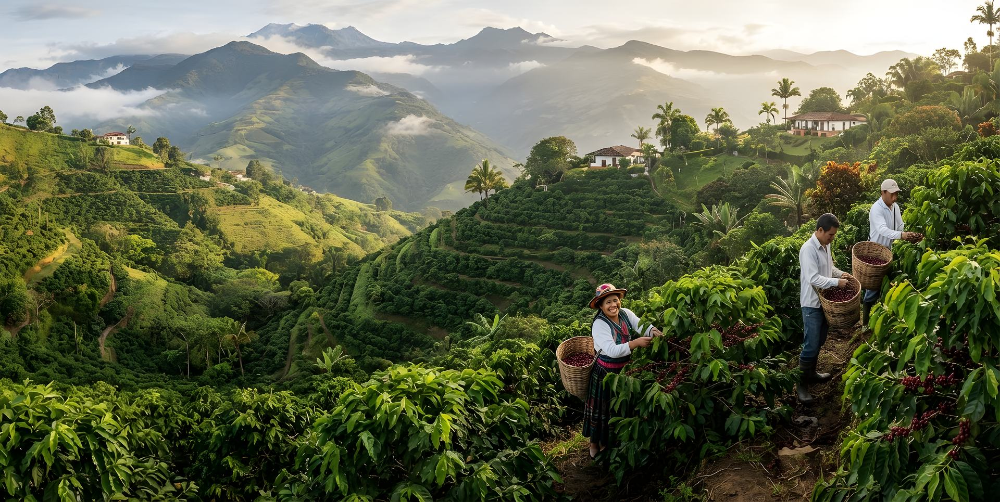

Tradición y Recolección Manual
Cada cereza se cosecha a mano en su punto óptimo de madurez en las laderas andinas, preservando la dulzura natural del café arábigo lavado.
Cero mecanización invasiva

Denominación de Origen Protegida · FNC
Descubre cafés 100% colombianos de diferentes regiones, perfiles sensoriales y tostiones artesanales certificados. Compra directa y fresca con respaldo de más de medio millón de familias caficultoras.
Conoce a las mujeres y hombres detrás del café más suave del mundo. Compra sin intermediarios con respaldo institucional.
GARANTÍA DE ORIGEN
Trazabilidad Total
Guía Sensorial e Interactiva
Filtra y explora según tu paladar, momento del día o método de preparación favorito.
Catálogo Oficial FNC
Explora cafés de diferentes regiones, marcas de origen, perfiles y métodos de preparación.
Geografía & Microclimas
La geografía privilegiada, los microclimas de los tres ramales de los Andes y la dedicación campesina crean los perfiles más reconocidos del mundo.
Microlotes selectos, kits para baristas y ediciones limitadas con descuentos directos otorgados por las marcas tostadoras autorizadas.
Respaldo Institucional
“Compro Café de Colombia conecta directamente a consumidores con marcas y familias productoras, garantizando comercio justo y trazabilidad en origen.”
Cada cereza se cosecha a mano en su punto óptimo de madurez en las laderas andinas, preservando la dulzura natural del café arábigo lavado.
Cero mecanización invasiva
Reconocida por la SIC y la Unión Europea. Solo cafés sometidos a rigurosos paneles de catación de taza limpia y acidez balanceada integran este catálogo.
Trazabilidad Almacafé
Tu compra respalda el Fondo Nacional del Café, garantizando bienes públicos como investigación en Cenicafé, asistencia técnica y compra segura.
Impacto Social Directo
Proceso Transparente
Una experiencia directa y confiable respaldada por la logística de Almacafé.
Navega por perfil de notas, tostión, municipio o departamento productor certificado.
Selecciona grano entero para mayor frescura o molido según tu método de cafetera.
Pago 100% seguro a través de ePayco con tarjeta de crédito, débito o PSE bancario.
Alistado con protocolo de calidad en el CEDI Almacafé Soacha y llevado a tu puerta.
Revista Digital & Cultura
Aprende sobre catación, técnicas de extracción y los secretos de cada cordillera.